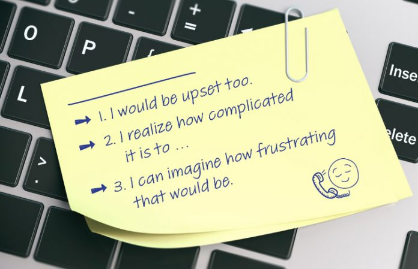
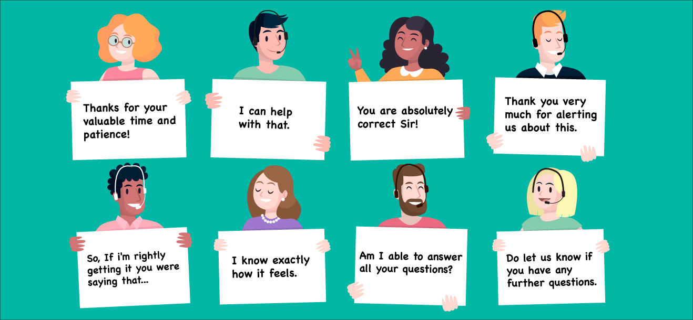

Engage
Empathy
Providing empathy in customer service means that you allow the customer to feel heard by acknowledging their feelings.
Doing so helps to enhance the experience. Empathy in customer service is especially important because it helps to: ... Increase customer satisfaction, even after a negative experience..
Empathy
How to Use Empathy Statements to win Customers?
Successfully building a rapport with customers over the phone is very important to providing a good service or increasing sales. Whether customers call about a problem or complaint, your job is to make them feel heard, respected and understood. Acknowledging customer concerns shows empathy and understanding, and is essential to great communication and great service.